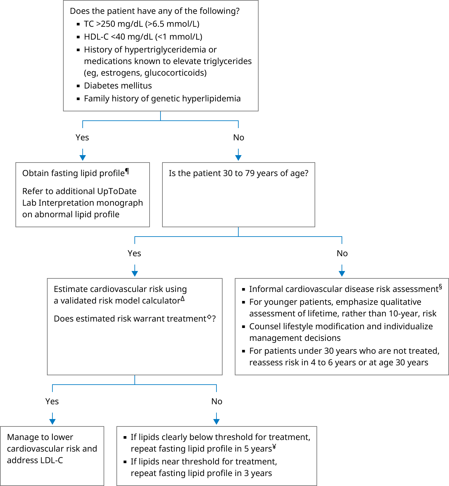

HDL-C: high-density lipoprotein cholesterol; LDL-C: low-density lipoprotein cholesterol; TC: total cholesterol.
* Lipid levels can vary depending on the patient population and clinical laboratory. In general, low HDL-C is <50 mg/dL (1.30 mmol/L) in women or <40 mg/dL (1.03 mmol/L) in men. TC <200 mg/dL (5.2 mmol/L) is considered desirable, 200 to 239 mg/dL (5.2 to 6.1 mmol/L) is borderline high, and >239 mg/dL (6.1 mmol/L) is high. Interpretation of a specific abnormal test result should be based upon the reference range reported with that result.
¶ Fasting lipid profile: TC, HDL-C, LDL-C, and triglycerides. TC >250 mg/dL or low HDL-C is often associated with hypertriglyceridemia.
Δ Refer to UpToDate content on cardiovascular disease risk assessment in primary prevention for available risk calculators to estimate 10-year and lifetime cardiovascular disease risk.
◊ Most patients with estimated 10-year cardiovascular disease risk ≥10%, or estimated lifetime risk >39%.
§ We do not routinely use a risk calculator to perform quantitative risk estimates in patients between ages 20 and 29 years or >79 years.
¥ If normal, lipid monitoring can be discontinued at age 65.